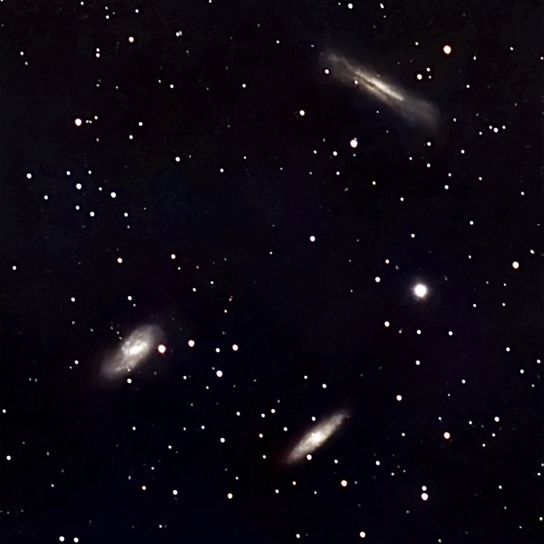
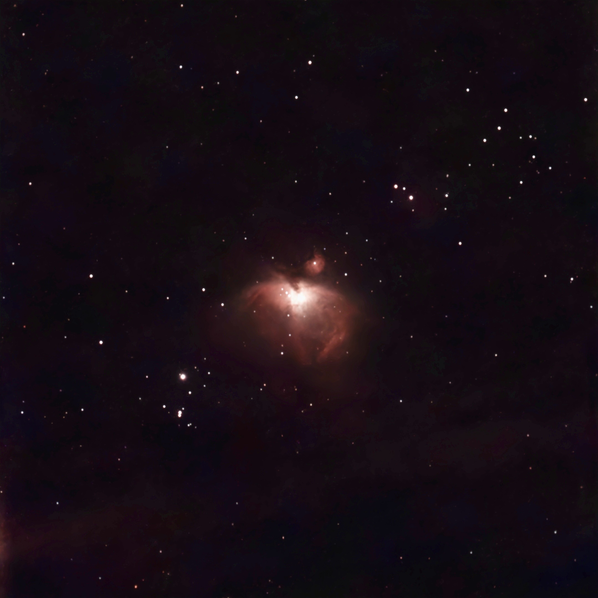
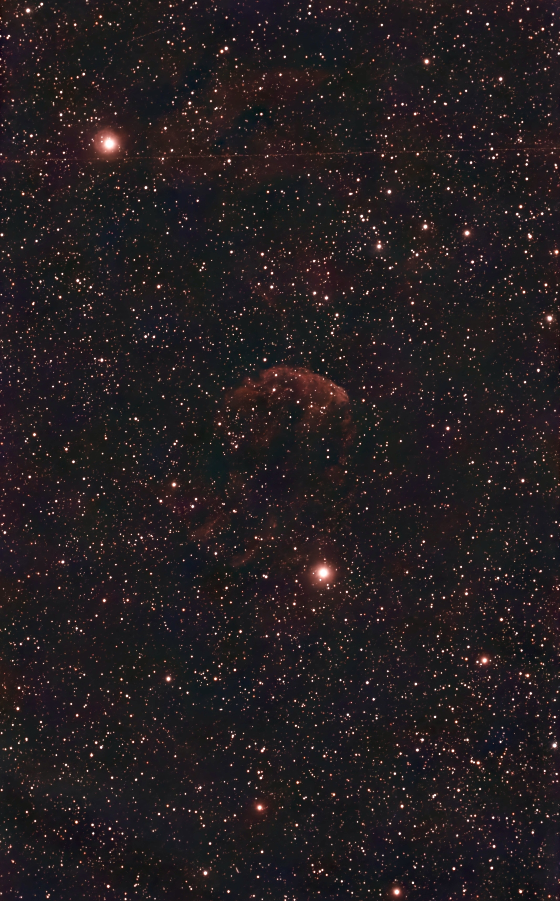

The Bode's Galaxy:
The Bode's Galaxy, also known as Messier 81 (M81) or NGC 3031, is a
grand design spiral galaxy located in the constellation Ursa Major. It
is one of the brightest galaxies in the night sky and is easily visible
with binoculars or a small telescope. The galaxy is approximately 12
million light-years away from Earth and has a diameter of about 90,000
light-years. The Bode's Galaxy is known for its well-defined spiral arms
and bright central core, making it a popular target for astronomers and
astrophotographers alike.

The Sun:
The Sun is the star at the center of our solar system. It is a nearly
perfect sphere of hot plasma, with internal convective motion that
generates a magnetic field via a dynamo process. The Sun is by far the
most important source of energy for life on Earth. It provides light and
heat, which are essential for the survival of plants, animals, and
humans. The Sun's energy also drives weather patterns and ocean currents
on Earth. It has a diameter of about 1.39 million kilometers (864,000
miles) and is composed primarily of hydrogen (about 74%) and helium
(about 24%), with trace amounts of heavier elements.

The Leo Triplet:
The Leo Triplet is a group of three galaxies in the constellation Leo.
The galaxies are NGC 3351, NGC 3352, and NGC 3353. They are similar in
size and appearance, and are located about 60 million light-years from
Earth.

The Orion Nebula:
The Orion Nebula is a diffuse nebula situated in the constellation
Orion. It is one of the most famous and well-studied star-forming
regions in the local universe. The nebula is about 1,344 light-years
away from Earth and is visible to the naked eye as a fuzzy patch in the
constellation Orion.

The Jellyfish Nebula:
The Jellyfish Nebula is a peculiar planetary nebula located in the
constellation Hydra. It is characterized by its distinctive shape, which
resembles a jellyfish, and is about 2,000 light-years away from Earth.